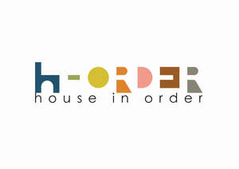

Trade Mark Journal No.2026/010 6 March 2026
UK00004328491 22 January 2026 (3,4,16,20,21,24)

- Class 3
- Non-medicated cosmetics and toiletry preparations; non-medicated dentifrices; perfumery, essential oils; bleaching preparations and other substances for laundry use; cleaning, polishing and abrasive preparations; cosmetics and cosmetic preparations; natural cosmetics; organic cosmetics; skincare cosmetics; hair cosmetics; eye cosmetics; nail cosmetics; lip cosmetics; eyebrow cosmetics; cosmetics for children; cosmetics for suntanning; abrasive preparations for use on the body; moisturisers [cosmetics]; tissues impregnated with cosmetics; facial wipes impregnated with cosmetics; cleaning pads impregnated with cosmetics; refill packs for cosmetics dispensers; cosmetics in the form of creams; cosmetics in the form of lotions; cosmetics in the form of powders; cosmetics in the form of gels; cosmetics in the form of oils; essential oils for cosmetic purposes; tissues impregnated with essential oils, for cosmetic use; cosmetics all for sale in kit form; tooth cleaning preparations; teeth whitening strips impregnated with teeth whitening preparations [cosmetics]; feminine hygiene cleansing towelettes; make-up; make-up kits; make-up removers; make-up removing preparations; skin cleaners [non-medicated]; make-up pads of cotton wool; organic makeup; natural makeup; facial makeup; makeup setting sprays; dentifrices and mouthwashes; refill packs for body cleansing product dispensers; perfumery and fragrances; antiperspirants for personal use; deodorants for personal use [perfumery]; cosmetic oils; perfumed tissues; solid perfumes; liquid perfumes; perfumed soaps; perfumed powders; perfumed potpourris; perfumed creams; household fragrances; room perfume sprays; aromatics for perfumes; extracts of flowers [perfumes]; perfumes for industrial purposes; oils for perfumes and scents; essential oils as perfume for laundry purposes; scents; laundry preparations; laundry bleach; laundry liquids; laundry detergents; laundry powder; laundry soap; laundry soaking preparations; laundry fabric conditioner; colour run prevention laundry sheets; laundry starch; laundry additives for water softening; colour-brightening chemicals for household purposes [laundry]; cleaning and fragrancing preparations, other than for personal use; vehicle cleaning preparations; carpet cleaning preparations; dry-cleaning preparations; hand cleaning preparations; preparation for cleaning dentures; ammonia for cleaning purposes; eyeglass lens cleaning solutions; cleaning agents for household purposes; baby wipes impregnated with cleaning preparations; leather and shoe cleaning and polishing preparations; air (canned pressurized -) for cleaning and dusting purposes; upholstery cleaners; carpet cleaners; oven cleaners; toilet cleaners; spray cleaners for household purposes; stain removing preparations; reed diffusers; washing-up liquids; cleaner for cosmetic brushes; essential oils and aromatic extracts; natural oils for perfumes; polishing paper; polishing stones; cloths impregnated with polishing preparations for cleaning; abrasives; abrasive compounds; abrasive sheets; abrasive paper; abrasive cloth; abrasive preparations for vehicle care; parts and preparations for all the aforesaid goods.
- Class 4
- Industrial oils and greases, wax; lubricants; dust absorbing, wetting and binding compositions; fuels and illuminants; candles and wicks for lighting; scented candles; soy candles; floating candles; candles for use as nightlights; votive candles; church candles; tallow candles; fruit candles; table candles; tealight candles; special occasion candles; fragranced candles; candles for lighting; Christmas tree candles; Christmas lights [candles]; candles in tins; candles for absorbing smoke; grave candles, non-electric; candles containing insect repellent; bougies in the nature of wax candles; candles for use in the decoration of cakes; wax for making candles; wicks for candles and lamps; parts and fittings for all the aforesaid goods.
- Class 16
- Paper and cardboard; printed matter; bookbinding material; photographs; stationery and office requisites, except furniture; adhesives for stationery or household purposes; drawing materials and materials for artists; paintbrushes; instructional and teaching materials; plastic sheets, films and bags for wrapping and packaging; printer's type; printing blocks; writing instruments; drawing instruments; drawing materials; office stationery; writing stationery; stencils [stationery]; envelopes [stationery]; scented stationery; party stationery; pins [stationery]; stickers [stationery]; pens; coloured pens; drawing pens; fountain pens; marker pens; gel roller pens; ink for pens; ink cartridges for fountain pens; pens [writing implements] incorporating tips for operating touchscreen devices; chalk; felt tip pens; refills for ballpoint pens; highlighter pens; ink pens; pencils; mechanical pencils; pencil leads; colour pencils; rulers; erasers; whiteboard erasers; ink erasers; chalk erasers; correction fluid; correcting tapes [office requisites]; correction pens; pen and pencil holders; pen and pencil cases; stands for pens and pencils; binders; ring binders; folders; folders for papers; notebooks; pocket notebooks; spiral-bound notebooks; weekly planners; monthly planners; daily planners; year planners; wall planners; desk top planners; journals; removable self-stick notes; adhesive tape dispensers [office requisites]; adhesive tape for stationery purposes; paper tapes; paper shredders for office use; paper cutters; hole punches [office requisites]; paper staplers; staples; glue for stationery or household purposes; adhesives for art use; blotters; nibs; sealing stamps; rubber stamps; stamp pads; pencil sharpeners; sharpeners for cosmetic pencils; laminating machines for office use; label printing machines for household and stationery use; bags and articles for packaging, wrapping and storage, of paper, cardboard or plastics; works of art and decorations, including figurines, made primarily of paper or cardboard, and architects’ models; paperboard; paperweights; braille paper; filter paper; paper towels; printing paper; blotting paper; tracing paper; paper bags; grocery paper; filler paper; paper signboards; household paper; paper bows; paper folders; paper-clips; tissue paper; paper tissues; paper handkerchiefs; paper bibs; paper serviettes; paper napkins; paper stationery; typewriter paper; toilet paper; hygienic paper; wax paper; greaseproof paper; parchment paper; baking paper; ovenproof paper; transfer paper; paper bunting; paper flags; paper banners; note paper; letter paper; writing paper; kitchen paper; copying paper; envelope paper; masking paper; paper tablecloths; laminated paper; craft paper; ruled paper; paper doilies; packing paper; paper containers; paper pads; drawing paper; recycled paper; paper coasters; papier mâché; paper badges; cloth paper; art paper; origami folding paper; paper table linen; paper cake decorations; paper crafts materials; paper party bags; table runners of paper; place mats of paper; table mats of paper; dinner mats of paper; posters made of paper; table decorations of paper; industrial paper and cardboard; paper filters for coffee; party ornaments of paper; display banners of paper; packaging containers of paper; bin liners of paper; boxes of paper or cardboard; wrapping materials made of paper; printed packaging materials of paper; bags of paper for foodstuffs; face cloths made of paper; paper sheets for note taking; paper cake toppers; paper for use in the manufacture of wallpaper; packing [cushioning, stuffing] materials of paper or cardboard; printed books, magazines, newspapers, and other paper-based media; paper teaching materials; albums; framed photographs; printed photographs; paper for printing photographs; apparatus for mounting photographs; drawings; art prints; printed matter representing monetary value or for financial purposes; gift cards; gift vouchers; vouchers; parts and materials for all the aforesaid goods.
- Class 20
- Furniture, mirrors, picture frames; containers, not of metal, for storage or transport; unworked or semi-worked bone, horn, whalebone or mother-of-pearl; shells; meerschaum; yellow amber; household furniture; chairs; dining chairs; tables; end tables; dining tables; trolleys [furniture]; lockers; cabinets; display cabinets; shoe cabinets; coat stands; pet furniture; animal housing and beds; lounge furniture; sun loungers; outdoor furniture; garden furniture; folding chairs; deck chairs; lounge chairs; lawn furniture; plant stands; flower stands; benches; camping furniture; stackable furniture; computer furniture; office furniture; office tables; desks; office desks; office chairs; standing desks; swivel chairs; book stands [furniture]; lap desks being furniture; display furniture; seating furniture; patio furniture; bathroom furniture; bathroom vanities [furniture]; towel stands [furniture]; medicine cabinets; bathroom cabinets; stools; bathroom stools; foot stools; step stools; bathroom mirrors; bedroom furniture; beds, mattresses, pillows and cushions; sofa beds; infant beds; bunk beds; water beds; foldaway beds; portable beds; bedsteads; wardrobes; clothes racks [furniture]; side tables; bedside tables; bedside cabinets; ottomans; furniture chests; chests of drawers; dividers for drawers; drawers for furniture; ceramic pulls for cabinets, drawers and furniture; dressers; kitchen furniture; kitchen tables; kitchen dressers; kitchen cabinets; counters [furniture]; indoor furniture; indoor blinds, and fittings for curtains and indoor blinds; window blinds [interior]; upholstered furniture; fitted furniture; composable furniture; furniture adapted for use by those with mobility difficulties; living room furniture; futons; sofas; convertible sofas; recliners [chairs]; arm chairs; bean bag chairs; inflatable chairs; rocking chairs; consoles [furniture] for mounting units of electronic equipment; audio racks [furniture] for use with audio equipment; furniture for caravans; inflatable furniture; furniture for children; furniture for babies; babies' chairs; high chairs for babies; storage furniture; furniture units; shelves; shelving units; display shelves; book shelves; shelves for storage; integrated furniture; wooden furniture; furniture of metal; bamboo furniture; furniture made of rattan; furniture of plastic materials; furniture racks; trestles [furniture]; transformable furniture; furniture panels; washstands [furniture]; screens [furniture]; furniture frames; furniture moldings; pouffes [furniture]; furniture parts; head-rests [furniture]; doors for furniture; freestanding partitions [furniture]; panelling for furniture; wine racks [furniture]; toy boxes [furniture]; covers (shaped -) for furniture; furniture fittings, not of metal; kits of parts [sold complete] for assembly into furniture; displays, stands and signage, non-metallic; multi-purpose stands [furniture]; showcases [furniture]; clothes hangers, clothes stands [furniture] and clothes hooks; mirrors; wall mirrors; decorative mirrors; printed mirrors; personal compact mirrors; hand-held mirrors; frames for mirrors; cupboards fitted with mirrors; mirrors enhanced by electric lights; make-up mirrors for travel use; mirror stands; picture frames; picture and photograph frames; containers, and closures and holders therefor, non-metallic; unworked and semi-worked bone, shell, amber, reed, bamboo, rattan or cork, or substitutes for these; works of art and decorations, including sculptures, made primarily of wood, straw, bone, shell, wax, resin, plastics or plaster, or of substitutes for these; parts and fittings for all the aforesaid goods.
- Class 21
- Household or kitchen utensils and containers; cookware and tableware, except forks, knives and spoons; combs and sponges; brushes, except paintbrushes; brush-making materials; articles for cleaning purposes; unworked or semi-worked glass, except building glass; glassware, porcelain and earthenware; household utensils for cleaning, brushes and brush-making materials; cleaning instruments, hand-operated; cleaning articles; articles for the care of clothing and footwear; adhesive rollers for cleaning; cleaning brushes; cloths for cleaning; cloths for dusting; abrasive instruments for kitchen [cleaning] purposes; polishing apparatus and machines, for household purposes, non-electric; toilet and bathroom cleaning utensils; dusters; gloves for household purposes; car washing brushes; car washing mitts; laundry baskets; clothes-pegs; cloths for eye-glasses; mops; brooms; dust-pans; battery operated lint removers; racks for drying clothes; dish drying racks; draining trays; shoe horns; shoe stretchers; ironing boards; ironing board covers; deodorising apparatus for personal use; air fragrancing apparatus; aromatic oil diffusers, other than reed diffusers, electric and non-electric; atomisers for household use; perfume atomisers; perfume bottles; vaporizers for perfume sold empty; containers for household or kitchen use; heat-insulated containers; containers for cosmetics; buckets; plant holders; planters of earthenware, plastic, or porcelain; compost containers for household use; beverage coolers [containers]; holders for toilet paper; holders for cosmetics; napkin holders; crockery; ceramic tableware; bakeware; chinaware; ovenware; holloware; beverageware; porcelain ware; baking utensils; utensils for household purposes; ceramics for kitchen use; biodegradable tableware, kitchen utensils; cooking utensils, non-electric; cooking pots and pans [non-electric]; bags for use in cooking; molds [kitchen utensils]; glasses, drinking vessels and barware; flasks; jars; jugs; bottles; water bottles; hip flasks; cups and mugs; drinking straws; carafes; chopsticks; bowls; coffee filters, non-electric; mixing machines, non-electric, for household purposes; non-electric bottle openers; lunch boxes; bento boxes; tablemats, not of paper or textile; coasters, not of paper or textile; cold packs for chilling food and beverages; bottle openers, electric and non-electric; bins for household refuse; pedal bins; blenders, non-electric, for household purposes; coffee makers, non-electric; coffee grinders, hand-operated; cafetieres; reusable ice cubes; reusable silicone food covers; salt and pepper shakers; liqueur sets; heaters for feeding bottles, non-electric; training cups for babies and children; trays for household purposes; ice cube trays; electronic pet feeders; animal grooming gloves; animal traps; devices for pest and vermin control; litter trays for pets; pet feeding bowls; pet drinking bowls; fly swatters; fly traps; cosmetic, hygiene and beauty care utensils; appliances for removing make-up, non-electric; appliances for removing make-up, electric; electric facial cleansers; applicators for cosmetics; make-up sponges; brushes for personal hygiene; brushes for grooming pet animals; body scrubbing puffs; body sponges; abrasive mitts for scrubbing the skin; children's potties; cases adapted for cosmetic utensils; cases for toiletry articles; pill organizers for personal use; holders for brushes; soap containers; tissue box covers; combs; hairbrushes; baby baths; back scratchers; soap dispensing bottles; fitted vanity cases; cosmetic bags [fitted]; electric and non-electric toothbrushes; apparatus for cleaning teeth and gums using high pressure water for home use; baby finger toothbrushes; toothpicks; interdental brushes for cleaning the teeth; containers for dentifrices; battery-powered dental flossers; dental floss; dental picks for personal use; candle warmers, electric and non-electric; candlesticks; candle extinguishers; candle drip rings; candle holders; pottery; souvenir plates; tea sets; coin banks; ornaments made of china, crystal, earthenware, glass, ceramic, or porcelain; works of art and decorations, including sculptures, made primarily of ceramics or glass, or of substitutes for these; busts of porcelain, ceramic, earthenware, terra-cotta, clay or glass; ceramic ornaments; plaques of porcelain, ceramic, earthenware or glass; towel rails and rings; sculptures of porcelain, ceramic, earthenware or glass; statues of china, crystal, earthenware, glass, porcelain or terracotta; boxes of ceramics, earthenware, china, glass, or porcelain; figurines of porcelain, ceramic, earthenware, terra-cotta, clay or glass; garden gnomes of earthenware, glass or porcelain; vases; plant pots; flower pots; bases for plant pots; flower baskets; watering cans; lawn sprinklers; gardening gloves; parts and fittings for all the aforesaid goods.
- Class 24
- Textiles and substitutes for textiles; household linen; curtains of textile or plastic; soft furnishings; fabrics; muslin fabric; flame resistant fabrics; fireproof upholstery fabrics; non-woven fabrics; shirt fabrics; inorganic fiber mixed fabrics; silk fabrics; woven fabrics; elastic fabrics for clothing; fabric imitating animal skins; upholstery fabrics; denim fabric; knitted fabric; woollen fabric; jute fabrics; cloth; cheesecloth; hemp cloth; oilcloth; satin; canvas; cloths for washing the body [other than for medical use]; face cloths; velvet; disposable cloths; sanitary flannel; linens; bath linen; kitchen and table linens; bed linen and blankets; bed covers; bed valances; bed skirts; bedsheets; bedspreads; blankets for household pets; pillowcases; quilts; quilt covers; mattress covers; eiderdowns; baby blankets; infants' bed linen; crib sheets; comforters; cot blankets; duvets; duvet covers; throws; curtaining materials; curtain fabric; curtain loops of textile material; curtain tie-backs of textile; curtain linings; curtain valences; draperies; net curtains; blackout curtains; door curtains; shrouds; coverings for furniture; covers for cushions; table covers; table linen, not of paper; loose covers for garden furniture; toilet seat covers; bean bag covers; textile goods, and substitutes for textile goods; textile substitute materials made from synthetic materials; materials for making into clothing; materials for upholstery; textile material; labels of textile; flags of textile or plastic; tapestries of textile; make-up pads of textile; make-up removal cloths, towels and wipes [textile], other than impregnated with cosmetics; baby buntings; badges made of fabric material; banners; textile tissues; table napkins of textile; coasters of textile; napery [textile]; mosquito nets; place mats of textile; table runners, not of paper; tablecloths, not of paper; towels of textile; kitchen towels; bathroom towels; beach towels; tea towels; hooded towels; dish towels; face towels; hand towels; wall hangings; parts and materials for all the aforesaid goods.
Orla Kiely
DJ Rowan
Representative: Stobbs